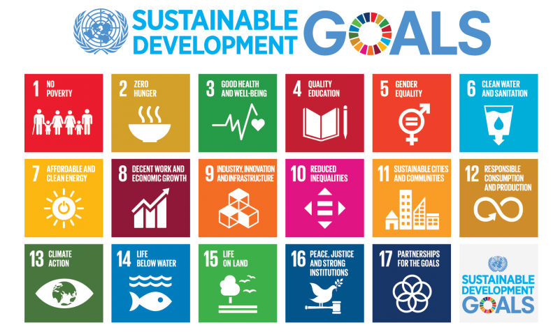

1. pgRouting による持続可能な開発目標の達成¶
1.1. 経緯¶
UN OpenGIS initiative は OSGeo Foundation とともに OSGeo UN Committee Educational Challenge を開催し、その Challenge 2 は pgRouting のワークショップ教材を作成することでした。このチャレンジは OSGeo UN Committee の目的、すなわち国連のニーズを満たし国連の目標を支援するオープンソースソフトウェアの開発と利用を促進することに貢献しています。pgRouting は道路上の自動車のルート検索に役立つだけでなく、配水網や河川の流れ、電力網の連結性の分析にも利用できます。現在、このワークショップは17の持続可能な開発目標のうち3つを扱うことで、pgRouting ワークショップを拡張しています
1.2. 国際連合¶
国際連合（国連）は、1945年に設立された政府間組織であり、国際の平和と安全を維持し、諸国間の友好関係を発展させて国際協力を実現することを目的としています。国連はニューヨーク市の国際地区に本部を置き、ジュネーブ、ナイロビ、ウィーン、ハーグにも主要な事務所を構えています。
国連の主な目的は次のとおりです:
国際の平和と安全の維持
人権の保護
人道支援の提供
持続可能な開発と気候変動対策の支援
国際法の擁護
1.3. 持続可能な開発目標とは¶

持続可能な開発目標（SDGs）は、2015年に国際連合で採択された17の相互に関連する目標であり、貧困と飢餓に終止符を打ち、地球規模の協力によって過剰な開発から地球を守る行動をすべての国に求める、普遍的な呼びかけです。国連は、すべての人々が平和と繁栄を享受できるようにすることで、これらの目標の達成を目指しています。17の目標は統合されたものであり、ある領域での行動が他の領域の結果に影響することを踏まえています。また、これらの目標は、社会・経済・環境の持続可能性を確保する均衡のとれた開発を推進します。各国は、最も取り残されている人々の前進を優先することを約束しています。次の表に、すべての持続可能な開発目標の概要を示します。
目標番号 |
目標名 |
目的 |
|---|---|---|
目標 1 |
貧困をなくそう |
あらゆる場所で、あらゆる形態の貧困に終止符を打つ |
目標 2 |
飢餓をゼロに |
飢餓に終止符を打ち、食料の安定確保と栄養状態の改善を実現し、持続可能な農業を推進する |
目標 3 |
すべての人に健康と福祉を |
あらゆる年齢のすべての人々の健康的な生活を確保し、福祉を推進する |
目標 4 |
質の高い教育をみんなに |
すべての人々に包摂的かつ公正な質の高い教育を確保し、生涯学習の機会を促進する |
目標 5 |
ジェンダー平等を実現しよう |
ジェンダー平等を達成し、すべての女性および女児のエンパワーメントを行う |
目標 6 |
安全な水とトイレを世界中に |
すべての人々に水と衛生へのアクセスと持続可能な管理を確保する |
目標 7 |
エネルギーをみんなに そしてクリーンに |
すべての人々が、手頃で信頼でき、持続可能かつ近代的なエネルギーを利用できるようにする |
目標 8 |
働きがいも経済成長も |
すべての人々のための持続的、包摂的かつ持続可能な経済成長、生産的な完全雇用およびディーセント・ワークを推進する |
目標 9 |
産業と技術革新の基盤をつくろう |
強靱なインフラを整備し、包摂的かつ持続可能な産業化を推進するとともに、技術革新の拡大を図る |
目標 10 |
人や国の不平等をなくそう |
国内および国家間の不平等を是正する |
目標 11 |
住み続けられるまちづくりを |
都市と人間の居住地を包摂的、安全、強靱かつ持続可能にする |
目標 12 |
つくる責任 つかう責任 |
持続可能な生産消費形態を確保する |
目標 13 |
気候変動に具体的な対策を |
気候変動とその影響に立ち向かうため、緊急対策を取る |
目標 14 |
海の豊かさを守ろう |
持続可能な開発のために海洋と海洋資源を保全し、持続可能な形で利用する |
目標 15 |
陸の豊かさも守ろう |
陸域生態系の保護、回復および持続可能な利用の推進、森林の持続可能な管理、砂漠化への対処、土地劣化の阻止および回復、ならびに生物多様性損失の阻止を図る |
目標 16 |
平和と公正をすべての人に |
持続可能な開発に向けて平和で包摂的な社会を推進し、すべての人々に司法へのアクセスを提供するとともに、あらゆるレベルにおいて効果的で説明責任のある包摂的な制度を構築する |
目標 17 |
パートナーシップで目標を達成しよう |
持続可能な開発に向けて実施手段を強化し、グローバル・パートナーシップを活性化する |
持続可能な開発目標の詳細は、この リンク で確認できます。
現在、このワークショップは17の持続可能な開発目標のうち3つを扱い、以下の内容を取り上げます:
持続可能な開発目標のためのデータ
UN SDG 3: すべての人に健康と福祉を
UN SDG 11: 住み続けられるまちづくりを
UN SDG 7: エネルギーをみんなに そしてクリーンに
1.4. 対象読者¶
この教材は、PostGIS と PostgreSQL の知識をある程度持ち、pgRouting の使い方を独学したいと考えている、地方・地域・国・国際機関の研究者や教育者が利用できます。データベース管理システムと、地理空間データの構造および形式について基本的な知識があることが推奨されます。
1.5. UN SDG 演習の前提条件¶
ワークショップのレベル: 上級
前提知識: SQL (PostgreSQL, PostGIS)、GIS と pgRouting の応用に関する概要
GIS と pgRouting の応用に関する概要
システム要件: このワークショップでは OSGeoLive (入手可能な最新版) を使用します
pgRouting ワークショップの基本章